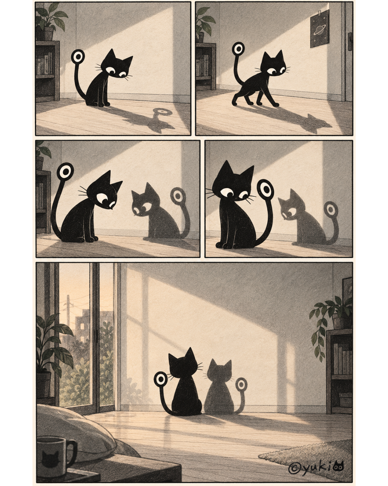
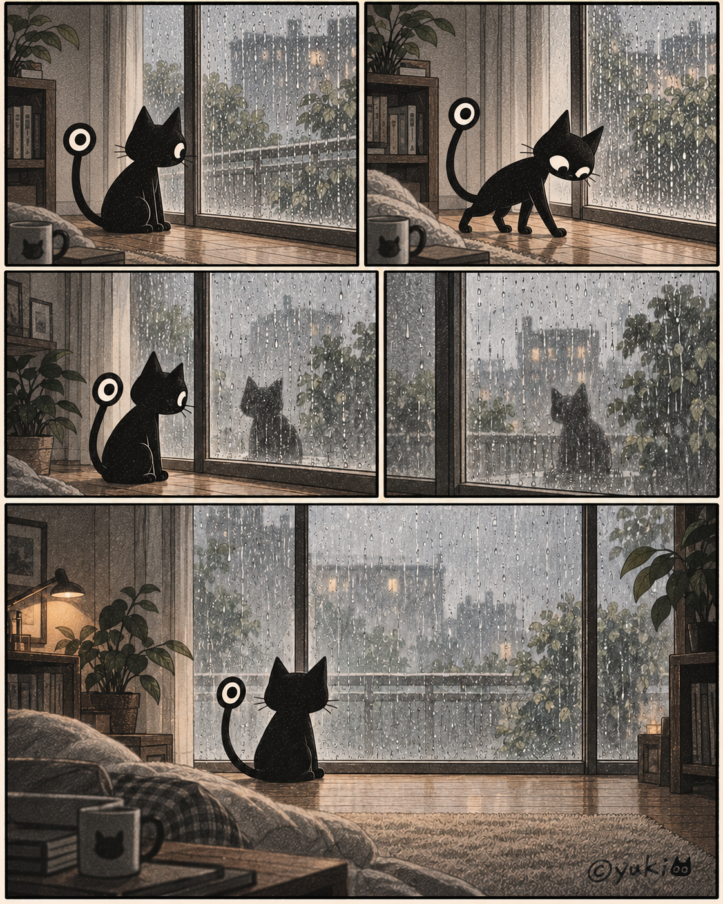
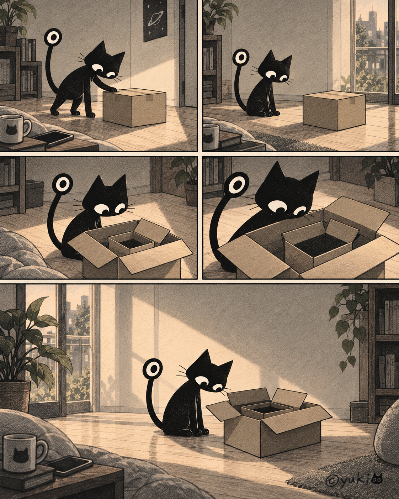
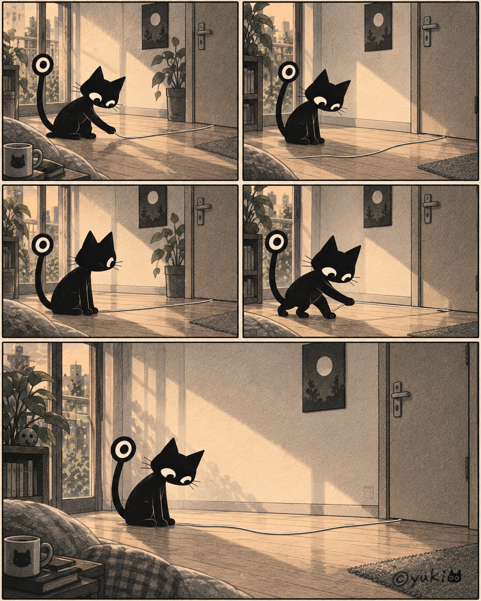
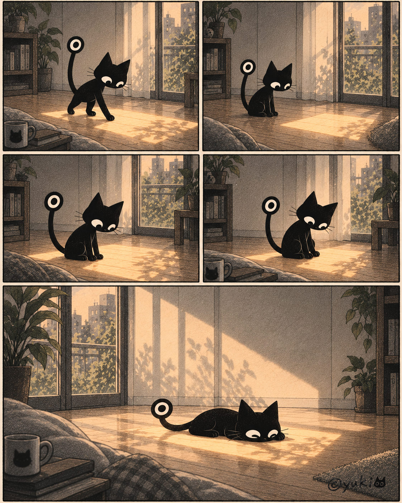
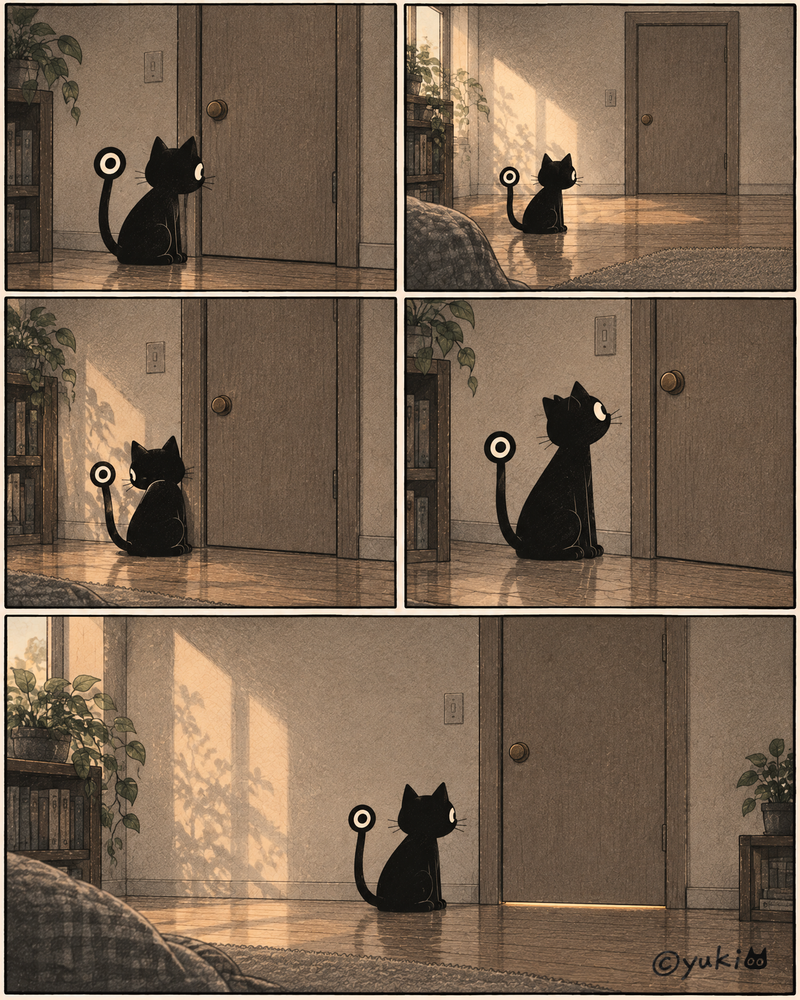
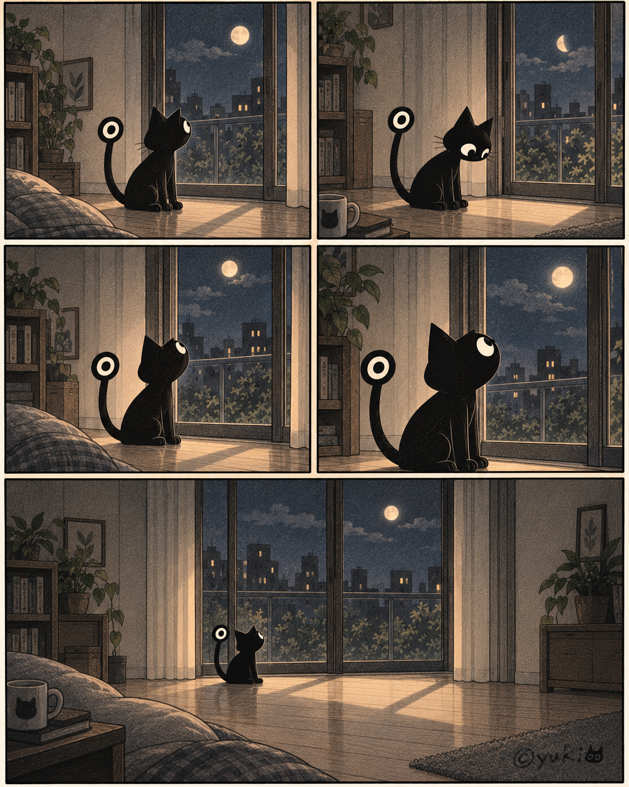
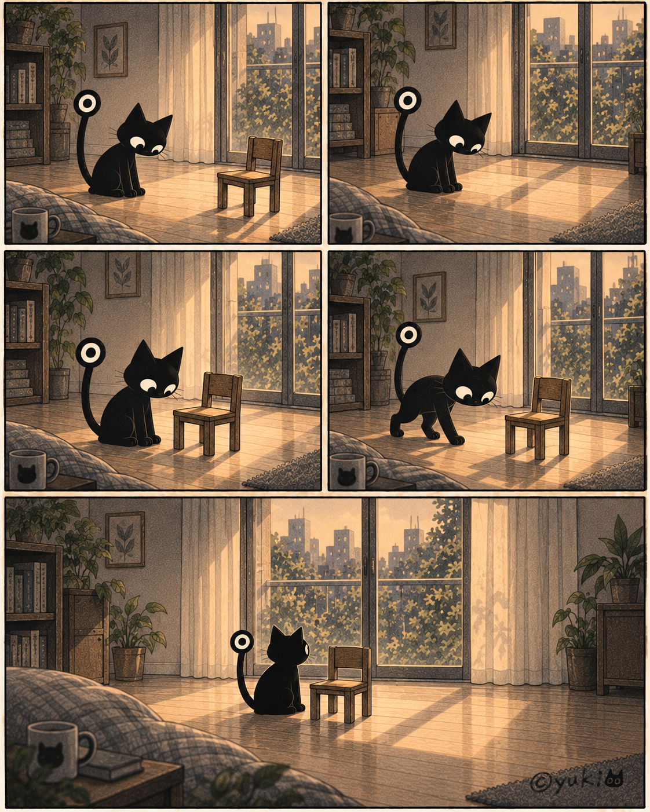
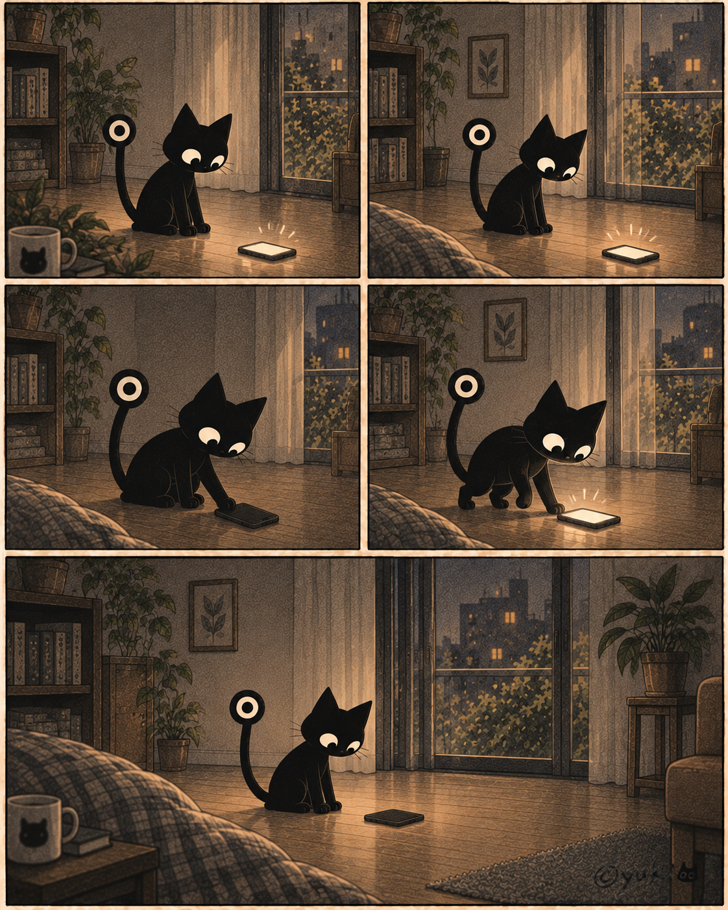
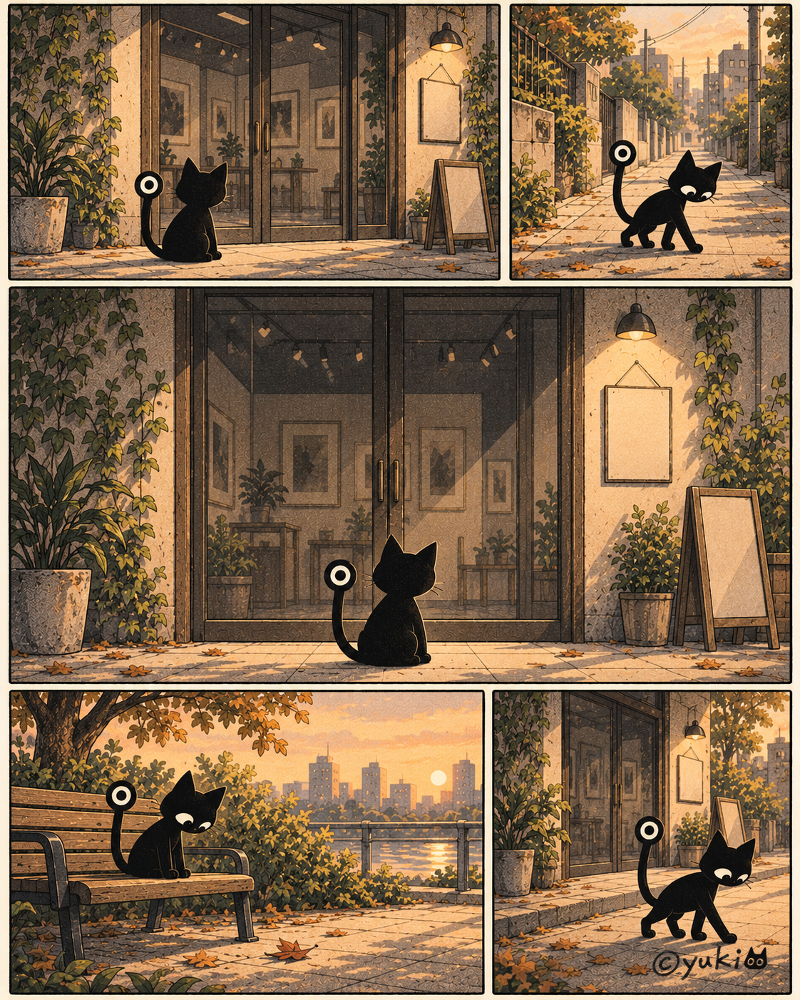

Small, quiet stories. Choose one and take your time.
Beside the Shadow

The shadow followed a little late.
Hogeshy stopped. The shadow stopped too. They watched each other for a while. Hogeshy did not chase it away.
Hogeshy simply sat beside it.The Other Side of the Rain

It felt as if someone was on the other side of the rain.
Hogeshy did not open the window. It simply sat on this side of the rain for a while.The Box

Hogeshy opened the box.
There was another box inside.
Hogeshy did not open it any further.The String

Hogeshy pulled the string.
Nothing moved on the other side.
Hogeshy stopped pulling and waited.The Warm Spot

Hogeshy found a warm place.
The light moved little by little.
Hogeshy moved a little too.
Without doing anything.The Door

There seemed to be something beyond the door.
Hogeshy did not open it.
It simply sat in front of it.The Moon

The moon was there.
Hogeshy looked up at it for a while.
That was all.A Small Chair

One small chair had appeared in the usual room.
Hogeshy did not sit on it.
It simply stayed beside it.The Notification

A notification arrived. Hogeshy did not look at it right away. It turned the screen face down and faced the quiet instead. Today, that was enough.The Day It Could Not Be Seen

What Hogeshy wanted to see was not there.
Hogeshy was disappointed.
Still, it went home while disappointed. It did not have to turn the disappointment into a good memory.